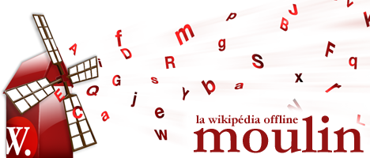

Accueil
-
Articles
-
Liste de Listes
-
Credits
Sponsorisé Par
Contenu et Licence
Wikipédia
, encyclopédie
librement distribuable
que chacun peut améliorer.
Tous les textes sont disponibles sous les termes de la
Licence de Documentation Libre GNU
.
Pour plus d'informations, visitez:
www.moulinwiki.org
Version Française 6.12 - moulinwiki.org